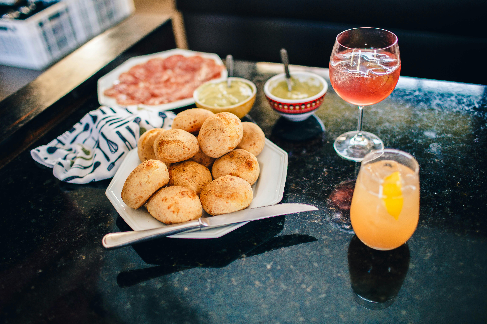

Homepage
Pão De Queijo

Description
Chewy Brazilian cheese bread made with tapioca flour, giving it a unique texture and cheesy goodness.
Ingredients
- oil or butter for the baking sheet
- 250ml whole milk
- 125g unsalted butter
- 1 tsp salt
- 300g tapioca flour
- 2 eggs
- 100g parmesan cheese, grated
Method
- Heat the oven to 220C/200C fan/gas 7. Oil or butter a baking sheet and set aside.
- Heat the milk, butter and salt in a medium saucepan and bring to a boil.
- Remove from the heat and add the tapioca flour. Stir vigorously, then leave to cool a little.
- Pour the dough into a standing mix to beat the dough until its cool, or use a wooden spoon and beat by hand.
- Beat the eggs in one at a time, waiting until each is completely incorporated before adding the next.
- When the dough is glossy and mixed, add the parmesan. Beat again until mixed.
- Spoon the dough onto the baking sheet in 1 tbsp balls, 5cm apart.
- Bake for 30 mins until crisp and golden.
- Remove from the oven and eat while still warm.